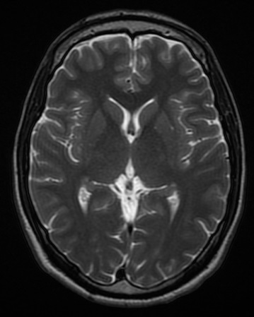

Conceptual image-formation schematic · not to scale
Magnetic fields, radiofrequency excitation and spatial encoding produce tissue signals. Sequence choices change which tissue properties dominate the image. There is no single universal MRI brightness scale equivalent to CT attenuation.
| Sequence | Useful teaching pattern |
|---|---|
| T1 weighted | CSF usually dark; cerebral white matter relatively brighter than gray matter. |
| T2 weighted | CSF usually bright; fluid-sensitive appearances. |
| FLAIR | T2-weighted imaging with free-fluid/CSF suppression. |
| DWI + ADC | Interpret the diffusion-weighted appearance with its ADC map. |
These are introductory patterns. Sequence parameters, field strength, fat suppression, pathology and artifacts can alter appearances. Match anatomy and acquisition labels when comparing a real examination.
FICTIONAL WORKED SCENARIO
Brightness alone does not establish restricted diffusion. T2 shine-through can contribute. Corresponding low ADC supports restricted diffusion in context; it does not establish a diagnosis by itself.
No ionizing radiation does not mean no hazards. Exact device identification and specified scanning conditions matter for MR Conditional implants. Gadolinium-based contrast, when indicated, requires its own assessment.
FDA guidance for MRI professionals · Contrast materials

Axial T2-weighted brain MRI at the lateral ventricles. Ventricular fluid is bright. This is a different source study and slice level from the T1 example.
Novaksean; source crop by Mikael Häggström · CC BY-SA 4.0 · Unchanged
Independent teaching image; not the patient from the fictional scenario.